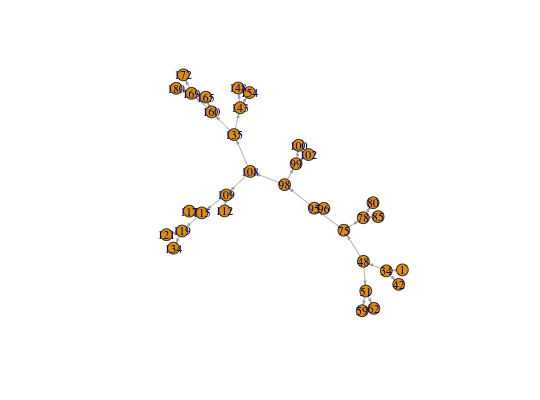

Return a simplified segment graph for a neuron
segmentgraph(x, weights = TRUE, segids = FALSE, exclude.isolated = FALSE, include.xyz = FALSE, reverse.edges = FALSE)
FALSE)igraph object containing only nodes of neuron keeping original
labels (x$d$PointNo => V(g)$label) and vertex indices
(1:nrow(x$d) => V(g)$vid).
The resultant graph will contain all branch and endpoints of the original neuron. This will be constructed from the SegList field, or where present, the SubTrees field (containing multiple SegLists for each isolated graph in the neuron). Each edge in the output graph will match one segment in the original SegList.
sg=segmentgraph(Cell07PNs[[1]]) str(sg)#> IGRAPH D-W- 34 33 -- #> + attr: label (v/n), vid (v/n), weight (e/n) #> + edges: #> [1] 1-> 2 2-> 3 2-> 4 4-> 5 5-> 6 5-> 7 4-> 8 8-> 9 9->10 9->11 #> [11] 8->12 12->13 12->14 14->15 15->16 15->17 14->18 18->19 19->20 19->21 #> [21] 21->22 21->23 23->24 23->25 18->26 26->27 27->28 27->29 26->30 30->31 #> [31] 30->32 32->33 32->34 #>library(igraph) plot(sg, edge.arrow.size=.4, vertex.size=10)